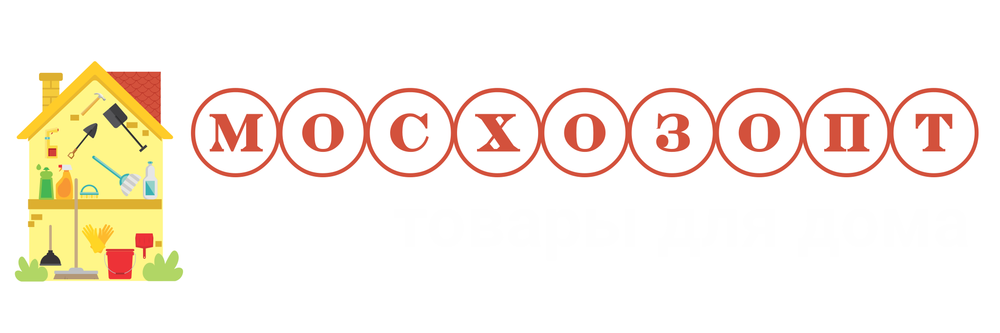

+8-963-999-97-83
Facebook
«Добро пожаловать на страницу 404! Вы находитесь здесь, потому что ввели адрес страницы, которая уже не существует или была перемещена по другому адресу»
Вернуться на сайт
© Все права защищены. ООО «МосХозОпт».
Facebook
Made on
Tilda